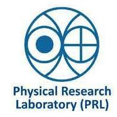
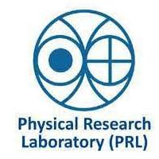

Satellite Information
Satellite Information
SABER stands for Sounding of the atmosphere using Broadband Emission Radiometry. SABER instrument is one of four instruments on NASA’s TIMED (Thermosphere Ionosphere Mesosphere Energetic Dynamics) satellite. The primary goal of the SABER experiment is to provide the data needed to advance our understanding of fundamental processes governing the energetic, chemistry, dynamics, and transport in the mesosphere and lower thermosphere. SABER accomplishes this with global measurements of the atmosphere using a 10-channel broadband limb-scanning infrared radiometer covering the spectral range from 1.27 µm to 17 µm.
MODIS (or Moderate Resolution Imaging Spectro radiometer) is a key instrument aboard the Terra (originally known as EOS AM-1) and Aqua (originally known as EOS PM-1) satellites. Terra's orbit around the Earth is timed so that it passes from north to south across the equator in the morning, while Aqua passes south to north over the equator in the afternoon. Terra MODIS and Aqua MODIS are viewing the entire Earth's surface every 1 to 2 days, acquiring data in 36 spectral bands, or groups of wavelengths. These data will improve our understanding of global dynamics and processes occurring on the land, in the oceans, and in the lower atmosphere. MODIS is playing a vital role in the development of validated, global, interactive Earth system models
Its name stands for Total Ozone Mapping Spectrometer. It was launched on 02 July 1996.TOMS measure the ozone in atmosphere and it also measure sulfur dioxide released in volcanic eruptions. The toms is a satellite instrument for measuring ozone values. It has been flown on NASA- satellites. Of the five TOMS instruments which were built , four entered successful orbit. Nimbus-7 and Meteor-3 provided global measurements of total column ozone on a daily basis and together provide a complete data set of daily ozone from November 1978 to December 1994. After an eighteen-month period when the program had no on-orbit capability, ADEOS TOMS was launched on august 17,1996 and provided data until satellite which housed it lost power on June 29, 1997
The CALIPSO satellite provides new insight into the role that clouds and atmospheric aerosols play in regulating Earths’ weather, climate, and air quality. CALIPSO combines an active LIDAR instrument with passive infrared and visible imagers to probe the vertical structure and properties of thin clouds and aerosols over the globe. CALIPSO was launched on April 28, 2006, with the cloud sat satellite. CALIPSO and Cloud sat are highly complementary and together provide new, never- before-seen 3D perspectives of how clouds and aerosols form, evolve, and affect weather and climate. CALIPSO and cloud Sat fly in formation with three other satellites in the A- train constellation to enable an even greater understanding of our climate system.